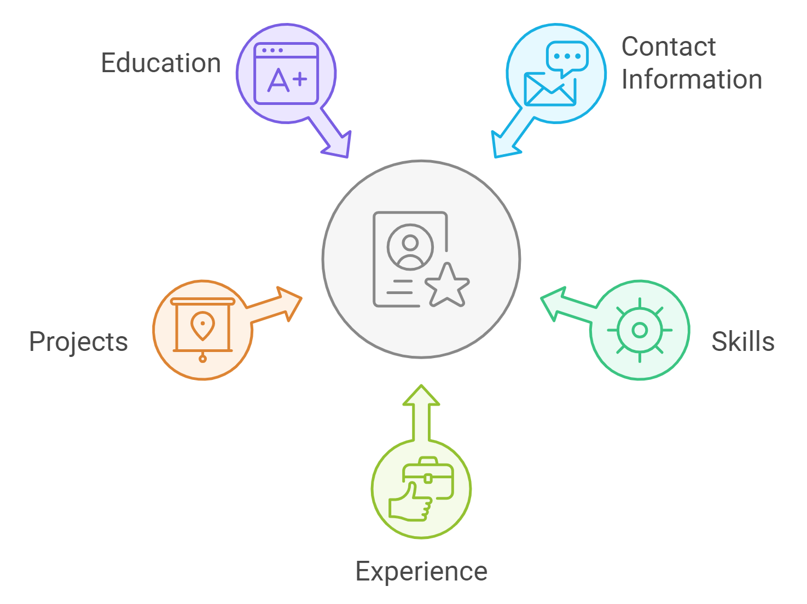

Chapter 3: Crafting Your AI-Optimized STEM Resume
Welcome back, resume revolutionaries! In our last installment, we explored the new paradigm of STEM resumes. Now, it's time to roll up our sleeves and get our hands dirty with the nitty-gritty of crafting a resume so irresistible, even Siri would swipe right.
In this chapter, we'll learn how to create a resume that not only showcases your STEM superpowers but is also optimized for those ever-vigilant AI-powered Applicant Tracking Systems (ATS). Think of it as teaching your resume to speak both "robot" and "recruiter" fluently. Let's break it down.
3.1 Essential Components of a STEM Resume

Alright, future masters of AI-pleasing resumes, let's dissect the key elements of a STEM resume and optimize each for AI scanning while keeping it appetizing for human recruiters. Like a perfect soufflé, it must look good, taste great, and not collapse under pressure.
1. Contact Information and Professional Profile
- Include your full name, phone number, professional email, and location (city, state) - because even AI needs to know where to send the job offer.
- Add LinkedIn URL and GitHub/portfolio links - Show off your digital footprint, sans that MySpace page from 2005.
- Create a concise, keyword-rich professional summary (3-4 sentences) - this is your career's elevator pitch on elevators that move really, really fast.
Example Professional Summary:
Results-driven Data Scientist with 5+ years of experience applying machine learning and statistical modeling to solve complex business problems. Proficient in Python, R, and SQL, with a track record of developing predictive models that have increased operational efficiency by 30%. Seeking to leverage expertise in deep learning and natural language processing to drive innovation at [Target Company].
AI Tip: Include relevant job titles in your professional profile to improve matching with target positions.
2. Technical Skills Section
Time to flex those technical muscles. But remember, we're going for "strong and capable," not "Hulk smash puny job application."
Make sure the skills you list are not only relevant to the job but also current. For example, if you're applying for a data science role, including proficiency in Python, SQL, and machine learning libraries like TensorFlow is probably crucial. However, be careful to prioritize the skills most relevant to the role you're applying for.
- Group skills by category (e.g., Programming Languages, Data Analysis Tools) - Help the AI (and humans) navigate your skill forest.
- Include proficiency levels, but be honest in your self-assessment - "Expert" doesn't mean "I copied/pasted from Stack Overflow once."
- Prioritize skills mentioned in the job description - Customization is key.
Example Technical Skills Section:
Programming Languages: Python (Expert), R (Advanced), Java (Intermediate)
Data Analysis Tools: SQL, Pandas, NumPy, SciPy
Machine Learning: TensorFlow, PyTorch, Scikit-learn
Big Data Technologies: Hadoop, Spark, Hive
Visualization: Tableau, Matplotlib, D3.js
Version Control: Git, GitHub
AI Tip: Many ATS systems will parse this section to match your skills against job requirements. Ensure you're using industry-standard terms. Don't list your skills as "Python Charmer" or "SQL Whisperer" - save the creativity for your interview.
3. Work Experience
Here's where we separate the STEM stars from the STEM wannabes. Time to show off your professional greatest hits.
- Use reverse chronological order - Because time machines haven't been invented yet (that we know of).
- Focus on achievements rather than duties - "Maintained database" is meh. "Optimized database, reducing query time by 50%" is music to both AI and human ears.
- Quantify impacts where possible - Numbers are the universal language of impressiveness.
Formula for Impactful Bullet Points: Action Verb + Task + Quantifiable Result + (Optional) Additional Context
Example:
Data Scientist, TechInnovate Inc., 2018-Present
• Developed machine learning algorithm that increased prediction accuracy by 35%, resulting in $2M annual savings for the client
• Led a team of 3 data analysts in creating a real-time dashboard, improving decision-making speed by 50%
• Implemented NLP model to analyze customer feedback, increasing customer satisfaction scores by 20%
AI Tip: Use industry-specific action verbs and include relevant keywords from the job description naturally in your bullet points, like sprinkling your resume with AI catnip.
4. Projects Section
Show off your STEM prowess with a projects section that screams "I don't just talk the talk, I code the code."
- Highlight projects that demonstrate key skills for your target role.
- Include personal or open-source projects, especially for entry-level positions.
- Use a consistent format: Project Name, Technologies Used, Brief Description, Outcome.
Example Project Entry:
Predictive Maintenance Model for Manufacturing Equipment
Technologies: Python, TensorFlow, IoT sensors
• Designed and implemented a neural network model to predict equipment failures
• Reduced unplanned downtime by 40% and maintenance costs by $500K annually
• Presented findings at the International Conference on Predictive Maintenance
AI Tip: Incorporate specific technologies and methodologies mentioned in the job description into your project descriptions where applicable.
5. Education and Certifications
Time to show off those hard-earned credentials. Just remember, in the STEM world especially, it's not just about the papers on your wall, but how you apply that knowledge.
- List degrees, majors, and relevant coursework.
- Include GPA if it's above 3.5 (for recent graduates).
- Highlight certifications, especially those from recognized industry bodies.
Example:
M.S. in Computer Science, Specialization in Machine Learning, Stanford University, 2017
Relevant Coursework: Advanced Algorithms, Deep Learning, Computer Vision
Certifications:
• AWS Certified Machine Learning – Specialty
• Google Professional Data Engineer
AI Tip: Many ATS systems prioritize candidates with specific degrees or certifications. Ensure these are clearly listed and match the job requirements.
3.2 Writing for AI and Human Audiences
Balancing the needs of AI parsing and human readability is crucial. Here's how to achieve this delicate balance:
1. Use Industry-Standard Terminology
- Research job descriptions in your field to identify common terms.
- Include both full terms and acronyms (e.g. "Natural Language Processing (NLP)").
2. Implement Strategic Keyword Placement
- Use keywords naturally throughout your resume, not just in the skills section - Sprinkle them like salt over fries, not like ketchup just in the corner.
- Place important keywords near the beginning of bullet points for greater impact - This is one of the rare times when the punchline can lead the joke.
3. Maintain Readability
- Use clear, concise language - Channel Hemingway, not Dickens.
- Break up dense text with bullet points and short paragraphs - Even AI tires of reading walls of text.
- Ensure logical flow of information - Tell a story, don't just list facts.
AI Tip: While it's important to include keywords, avoid "keyword stuffing." Most modern ATS can detect this and may penalize your resume. Like stuffing too many toppings on pizza - at some point, it just becomes a mess.
3.3 Formatting for ATS Compatibility
Ensure your resume is easily parsed by Applicant Tracking Systems.
1. Choose the Right File Format
- Use .docx or .pdf formats - Leave the .txt files for your angsty poetry.
- Avoid images, tables, and complex formatting - Again, save your artistic expression for the angsty poetry.
2. Use Standard Fonts and Headings
- Stick to common fonts like Arial, Calibri, or Times New Roman - Comic Sans is not your friend here.
- Use clear, standard section headings (e.g., "Work Experience", "Education") - "My Awesome Jobs" is not a standard heading, no matter how awesome your jobs were.
3. Avoid Document Headers and Footers
- Place all important information in the main body of the document - The good stuff in a sandwich goes between the bread slices, not in the wrapper.
- Use page numbers if necessary, but keep them simple - Avoid making your resume a CYOA.
3.4 Tailoring Your Resume for Specific STEM Fields
Different STEM fields may require slightly different approaches. Here are tips for some common areas:
Software Engineering
- Emphasize programming languages and frameworks - Show off your coding polyglot skills.
- Highlight version control and CI/CD experience - "It works on my machine" doesn't cut it anymore.
- Showcase significant projects and their impact - Did your code save the world? Or at least boost efficiency?
Data Science
- Focus on statistical analysis and machine learning skills - Show how you make data sing and dance.
- Highlight experience with big data technologies - Because sometimes, size does matter.
- Demonstrate ability to communicate complex findings - Can you explain neural networks to your grandma? That's a valuable skill.
Biotechnology
- Emphasize lab techniques and equipment proficiency - From pipettes to gene sequencers, show off your lab skills.
- Highlight publications and research experience - In biotech, publishing isn't just for writers.
- Showcase ability to work in interdisciplinary teams - Biology, chemistry, and coding? You're not just a scientist, you're a renaissance scientist.
Aerospace Engineering
- Focus on specific areas (e.g., propulsion, aerodynamics) - Show how you (literally) make things fly.
- Highlight experience with industry-standard software - Designing rockets isn't a pen-and-paper job anymore.
- Emphasize projects related to aircraft or spacecraft design - Did you build a model rocket? A drone? A flying horse?
AI Tip: Research the specific technologies and methodologies used in your target companies and incorporate these into your resume where relevant. You want to speak the local dialect of your dream job's native language.
3.5 Leveraging AI for Resume Enhancement
If you can't beat 'em, join 'em! Use AI-powered tools to refine your resume:
1. AI-Powered Content Suggestions
- Use tools like GPT-based resume builders for phrasing suggestions - This thesaurus finally understands context.
- Be critical of AI suggestions and ensure they accurately reflect your experience - Remember, AI is your assistant, not your autobiographer.
2. Keyword Optimization
- Use AI tools to compare your resume against job descriptions - It's like having a metal detector for golden keywords.
- Identify missing keywords and naturally incorporate them - Keyword Tetris, anyone?
3. Sentiment Analysis
- Use AI to analyze the tone of your resume - Make sure your resume doesn't sound like it's having a bad day.
- Ensure a confident and positive tone throughout - Your resume should be more "I've got this!" and less "Meh, I guess I can try."
AI Tip: While AI tools can be helpful, always review and edit their suggestions to maintain your authentic voice and ensure accuracy. AI is your enthusiastic intern - full of ideas, but needs supervision.
Chapter Summary
Congratulations! You've just leveled up your resume game. Let's recap our journey through the AI-optimized resume wilderness:
- Structure your resume with essential STEM-focused sections
- Balance AI optimization with human readability
- Format your resume for ATS compatibility
- Tailor your approach to your specific STEM field
- Leverage AI tools for resume enhancement, but always review and verify suggestions
Practical Exercise: Optimize Your Resume Like a Pro
Time to put your newfound knowledge to the test! Complete these tasks to transform your resume from "meh" to "marvelous":
- Review your current resume and identify three areas where you can enhance AI-readability based on the strategies in this chapter.
- Rewrite three of your current resume bullet points using the provided formula for impactful statements. Remember: Action Verb + Task + Quantifiable Result + (Optional) Additional Context = Resume Gold!
- Use an AI-powered keyword optimization tool to compare your resume to a job description in your field. Incorporate three relevant keywords you may have missed.
Pro Tip: Don't just do this exercise once and call it a day. Make it a regular part of your job-hunting routine. Your future self (the one without debt and a financial portfolio) thanks you.
Looking Ahead
You've now mastered the art of crafting an AI-optimized STEM resume. But, of course, there's more. In the next chapter, we'll explore advanced techniques for showcasing your technical expertise and standing out in the competitive STEM job market.
Quiz: "Chapter 3 Knowledge Check"
-
What is an essential component of a strong professional summary for a STEM resume?
-
How should you format your resume for optimal ATS compatibility?
-
What is the recommended formula for writing impactful bullet points?
-
How can AI tools be effectively used in resume creation?
-
What's an important consideration when tailoring your resume for specific STEM fields?
Answers: 1-b, 2-c, 3-b, 4-b, 5-c
How did you do? If you aced it, congratulations! You're well on your way to becoming a STEM resume ninja. If not, don't worry – even Tony Stark had to start somewhere. Keep studying, and soon you'll be crafting resumes that make both AI and humans swoon!